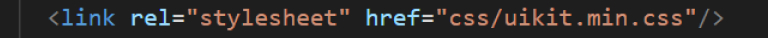
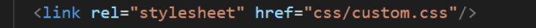
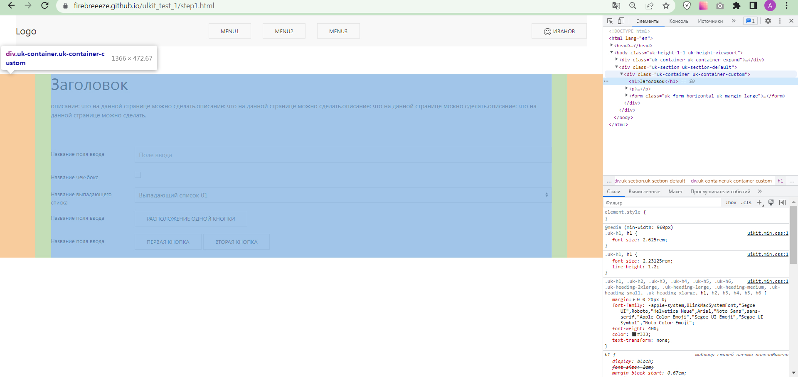

Обо мне
Приветствую всех на своём сайте! Меня зовут Анастасия. Мне 40 лет. Проживаю в РФ, г Санкт-Петербург. Образование: высшее (Саратовский Государственный Университет им.Н.Г.Чернышевского, специальность: химия).
Имеется большой опыт работы в сфере торговли (оператором 1С, менеджером и директором по логистике (также опыт управления людьми со штатом более 20 человек), опыт собственной предпринимательской деятельности со штатом до 5 человек (магазин автохимии и масел).
Около года изучаю front-end разработку. Прошла курсы по web-разработке Вадима Прокопчука (с куратором, программа курса), регулярно смотрю марафоны и видео по верстке разных авторов, с разными подходами и разными инструментами. Стараюсь участвовать в вебинарах и семинарах различных образовательных школ и платформ (бесплатные программы).
С кейсом лучших работ можно ознакомиться тут или тут, полный список работ тут
Изучала основы дизайна, web-дизайна, ux/ui дизайна (некоторые работы представлены Behance).
В последнее время работаю над созданием собственного портфолио (дизайн почти готов, верстка в процессе), приоритетно изучаю JS, также интересуюсь фреймворками.
Коммерческого опыта верстки на Bootstrap, к сожалению, нет, но есть некоторое представление о принципах работы данного фреймворка (в рамках курсов был пройден демонстрационный урок с результатом).
Кстати, именно, знакомство с Bootstrap позволило относительно быстро сориентироваться в документации по UIKit.
Чтение технической документации на английском языке обычно не вызывает затруднений.
Всегда стараюсь ответственно подходить к поставленным целям и задачам, разбираться в вопросе «до конца и чтобы работало, и на разных устройствах». Обучаюсь преимущественно самостоятельно, стараюсь помогать другим обучающимся (это тоже расширяет кругозор решения некоторых задач), регулярно учусь, углубляю и расширяю свои знания и навыки в сфере front-end разработки. С большим интересом изучаю и пробую новые различные инструменты веб-разработки.
В качестве первого коммерческого опыта мною сверстана работа для бота, которая была оценена с коэффициентом 1,5. К исходному макету добавлены различные эффекты для увеличения отзывчивости сайта, сделан адаптив и липкий хедер. Репозиторий; GitPages.
За время обучения был опыт верстки в Visial Studio Code и Webstorm. Хорошо знаю верстку (html, css). Есть понимание плюсов использования BEM-методологии. Был опыт верстки многостраничного сайта с применением Sass (в проекте использован модульный подход и Nunjucks-сборщик), и (в проекте использован компонентный подход). Также есть представление о принципе работы Gulp-сборки, npm, jquery-библиотеки, некоторых фреймворков, Git.
Есть статус самозанятости.
Хобби
Забота, то есть внимание к другим, - это основа хорошей жизни, основа хорошего общества.
Тестовое задание
Часть 1
Изначально я изучала самостоятельную верстку на основе html и css, верстая красивые и интересные макеты из figma и photoshop. Со временем ознакомилась с библиотеками и некоторыми фреймворками, npm, gulp и тд. Отчасти благодаря этому меня не пугает верстка без использования библиотек или фреймворков, и в то же время я вижу целесообразность применения некоторых дополнительных инструментов.
В современном мире самый главный ресурс – это время. И нужно уметь учиться быстро осваивать дополнительные инструменты, которые могут сэкономить время и трудозатраты при решении некоторых задач.
Одним из таких примеров является bootstrap – достаточно широко используемый css-фреймворк. За считанные минуты можно подключить уже готовые заготовки кода к своему проекту, и, используя документацию, достаточно быстро набросать сразу готовый сайт формами (блоками). Это идеальный вариант, если нет времени, или, например, нет дизайна сайта совсем. В данном случае bootstrap – это удобно, и отчасти оправдывает цели и средства.
Но есть некоторые минусы использования: достаточно много кода и много лишнего. Например, файл jquery –библиотеки занимает в разы меньше места, чем bootstrap. Поэтому я бы использовала его только в крайних случаях (небольшой проект, нет дизайна, а нужно срочно, например, лендинг или рекламною страничку). Но многое зависит от исходных данных поставленной задачи и самой задачи.
В качестве ярчайшего примера использования – когда нужно сверстать сайт «на коленке», то есть, без качественного и продуманного дизайна.
Часть 2
В Bootstrap и UIKit можно настроить шаблоны и компоненты для придания уникальности сайта или бренда. Не рекомендуется вносить изменения напрямую в файлы ядра, поскольку их сложно отслеживать, и при обновлении версии все изменения будут потеряны. Можно использовать два метода. Первый – использование переопределений CSS – применяется к сайтам, использующим BootstrapCDN или предварительно скомпилированные версии Bootstrap. Второй – с использованием переменных Sass – применяется к сайтам, использующим версию исходного кода Bootstrap (на примере Bootstrap).
Каждый метод идеально подходит для разных случаев. Хотя использование переопределений CSS проще, оно требует больше времени и его сложно масштабировать. С другой стороны, использование переменных Sass идеально подходит для внесения более обширных изменений на сайте.
Для переопределения свойств css целесообразнее создать свой собственный код в отдельном файле и подключить его соответствующим образом.
Рассмотрим наш пример, на проекте, в котором используется UIkit, контейнер для контента должен иметь ширину 1366px.
Согласно документации нужно добавить класс uk-container к блочному элементу, чтобы придать ему максимальную ширину и обернуть основное содержимое сайта. Анализ модификаторов размера показал, что в UIkit есть контейнеры с максимальной шириной на 1200px и 1400px (рассматриваю ближайшие к задаче) – нам это не подходит для решения поставленной задачи. Также через диспетчер элементов вижу, что uk-container имеет внутренние отступы (padding) по 40px справа и слева. То есть нам нужно переопределить css свойство контейнера. Для этого в той же папке, где хранится файл uikit.min.css, создаю отдельный файл, например, custom.css.
Подключаю файл к проекту: в index.html нахожу строку
(подключение css UIKit), ниже пишу
Файл подключен с более высоким уровнем специфичности.
В файле custom.css переопределяю свойства max-width: 1286px для нашего контейнера (1286px если хотим сохранить отступы от краев экранов, то 1366 – 40 – 40 = 1286px)
.uk-container-custom {
max-width: 1286px;
}
Задаем 1286px
Также в html файле добавляем кастомный класс .uk-container-custom к нужным uk-container. (Пример реализован в следующей части задания, применительно к контейнеру с контентом в файле step1.html).
Часть 3
Страница №1: Главная страница представлена файлом index.html.
В MENU1 есть ссылка на страницу пошагового интерфейса.
Страница №1: Страница пошагового интерфейса представлена файлом step1.html.
При клике на Logo – возвращает на исходную первую страницу index.html
Контакты
Связаться со мной можно напрямую по номеру телефона, email, в соцсетях: